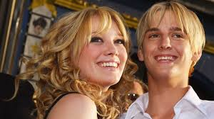

Pop singer Aaron Carter at the MTV Movie Awards in Los Angeles in June 2006. He died on Saturday at 34. (Fred Prouser/Reuters)
Stars and fans remember Aaron Carter, lamenting ‘curse’ of childhood fame
Aaron Carter's Death has sparked an outpouring of emotion from fans and celebrities who remembered the 34-year-old pop singer as a boy who shot to fame in the late 1990s and a troubled adult who battled addiction under the uncomfortable spotlight that child stardom often brings.
By Jennifer Hassan Published November 6, 2022 at 11:01 a.m. EST
Carter — who was known for a number of late-’90s and early-2000s pop hits and as the younger brother of Backstreet Boys singer Nick Carter — died on Saturday, according to a statement from Roger Paul, one of his representatives. Paul did not list a cause of death, and a spokesperson for the Los Angeles County Sheriff’s Department said detectives were investigating a report of a “suspicious death” at Carter’s home in Lancaster, Calif.
His twin sister, Angel, posted photos of the two as infants to Instagram on Sunday, with a caption reading: “I loved you beyond measure. You will be missed dearly. My funny, sweet Aaron, I have so many memories of you and I, and I promise to cherish them. I know you’re at peace now. I will carry you with me until the day I die and get to see you again.” Nick Carter said Sunday that he would miss his brother “more than anyone will ever know,” sharing his statement on Instagram alongside photos of the pair throughout the years.“My heart is broken,” his statement said. “Even though my brother and I have had a complicated relationship, my love for him has never ever faded.” (In 2019, Nick said he and his sister filed a restraining order against Aaron, which Nick described in a Twitter post: “We were left with no choice but to take every measure possible to protect ourselves and our family,” Nick wrote, adding that he still loved Aaron and hoped he would get “the proper treatment he needs before any harm comes to himself or anyone else.”)
Aaron Carter often spoke openly about his addiction and mental health issues, and said earlier this year that he had been sober for five years.
“I have always held on to the hope that [Aaron] would somehow, someday want to walk a healthy path and eventually find the help that he so desperately needed,” Nick Carter’s Instagram post said. “Sometimes we want to blame someone or something for a loss, but the truth is that addiction and mental illness is the real villain here.”

Hilary Duff and Aaron Carter at the premiere of the Lizzie McGuire Movie in 2003. (Photo: Lucy Nicholson/Getty Images)
Actress Hilary Duff — a former child star who dated Carter when the pair were teenagers — also lamented Aaron Carter’s public problems.
“I’m deeply sorry that life was so hard for you and that you had to struggle in-front of the whole world,” Duff wrote in an Instagram post.“Boy did my teenage self love you deeply,” she added.
“We are shocked and saddened about the sudden passing of Aaron Carter. Sending prayers to the Carter family,” boy band New Kids on the Block said via social media, while ’90s boy band ’N Sync — which collaborated on a charity single with Carter in 1998 — also paid tribute to the star.
Carter was introduced to fame early in life: In 1997, while still only 9, he opened on tour for the Backstreet Boys. That same year, he released his first solo album in Europe, just days before turning 10. He then went on to make several television appearances, including in an episode on the first season of “Lizzie McGuire,” in which Duff had the leading role.
“Fame at a young age is often more a curse than a blessing and Surviving it is not easy,” tweeted songwriter Diane Warren.
Like Warren, others on social media also lamented the troubles that came with Carter’s early career and life in the public eye. “The Aaron Carter news is so sad. Child stardom is deeply cruel,” read one tweet. “Stardom is a monster,” read another.
Fellow child star Billy Gilman, who at age 11 in 2000 became the youngest country artist to have a Top 40 hit, posted a photo on Instagram of himself and Carter as children. “I am gutted by this one. The amount of times I reached out as a brother to see if he was ok I can’t begin to count,” his caption read in part. “I have no words. All I can say is I know what you had to deal with since we first met in 2001. You can now rest.”
In a 2013 interview with “The Morning Show” on Canadian network Global News, Carter reflected on the darker side of child stardom, telling the show’s hosts that he “absolutely” faced challenges throughout his childhood and teenage years as a result of his celebrity — including leaving school in second grade and being home-schooled so he could go on a world tour.
“I faced a lot of struggles,” he said. “I started off as a kid.”
He added that there were “a lot of times” when drugs were presented to him and that he got in “a lot of trouble” for using them.
“Aaron, I’ve mourned the loss of you [a] few days before we broke up [in 2019]. We’ve both cried our eyes out because your addiction won and we both knew it. For the last few years now, I knew that any day now I’d be writing this,” tattoo artist Lina Valentina, an ex-girlfriend of Carter's, posted to her Instagram stories on Saturday. “You have no idea how hard your family and I fought to try and help you and get you back to sobriety; how much pain it has caused us to see your health deteriorate over the last years, but I want people to remember WHO you were when you were sober.”
In 2017, Carter revealed that he was bisexual, telling fans: “This doesn’t bring me shame, just a weight and burden I have held onto for a long time that I would like lifted off me.” Two years later, he appeared in an episode of “The Doctors” talk show, explaining how he spent many years “huffing,” or inhaling substances. Carter said he was introduced to it at the age of 16 by his sister Leslie, who died in 2012 of a drug overdose at 25.
“I was huffing because I’m a drug addict,” he said, before going on to describe his time in rehab, which was then followed by a relapse. “I can say I’ve been through hell and back,” he said, his eyes filling with tears. “I’m back. And I’m here to stay.”
Travis M. Andrews and Praveena Somasundaram contributed to this report.